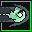
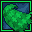
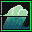
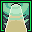
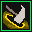
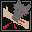

-
Wolfer Howl
Might Druid Form Skill
Let out a ferocious howl that bolsters you and your friends for 12 seconds. Increasing damage dealt by attacks by 1..10..12.
-

Gale
Might Druid Enhancement Spell
Shoot a ball of wind that deals 1..24..30-3..36..44 wind damage at target enemy. If it hits, your next spell casts 2 seconds faster.
-
Ravage
Instinct Druid Form Combat Skill
Rip open a wound on target enemy. For 10 seconds after being hit by this attack they take 1..12..15 extra damage whenever they take Elemental damage.
-
Restore
Focus Druid Spell
Heal target friend for 2..86..107-4..168..209 and remove up to one condition and curse they are effected by.
-
Renewal
No Stat Druid Enhancement Spell
Plant a magic seed that removes one random curse or condition from target friend after 5 seconds.
-
Ancient Wisdom
No Stat Druid Enhancement Spell
Invoke ancient magicks for 30 seconds that reduces your maximum energy is by 20, but raises all of your stats by 4.
-
One With Nature
No Stat Druid Form Skill
Take a deep breath and recover 15 Energy.
-
Thorn Burst
Instinct Druid Form Combat Skill
Attack your target, if you hit magical thorns burst out of your weapon and deal 1..15..18-2..40..50 Earth damage to all other enemies within melee range of them.
-
Meditation
Class Core Druid Form Spell
Relax for a moment and heal yourself for 2..66..82-4..99..123.
-

Leaf Cloak
Resolve Druid Enhancement Spell
Surround target friend with magic leaves that heal them for 4..40..49-6..60..74 over the next 12 seconds. If they take damage during that time, the damage is reduced by 1..60..75 and the leaves disperse.
-
Thorn Shield
Resolve Druid Enhancement Spell
Target friend is surrounded by thorns for 60 seconds. The thorns deal 1..20..25 earth damage to enemies who attack them
-
SKILL_FURIOUS-BITE_NAME
Instinct Druid Form Combat Skill
SKILL_FURIOUS-BITE_DESCRIPTION
-

Downburst
Might Druid Spell
Blast target enemy with a fierce gust of wind that deals 2..49..61-5..74..91 wind damage and interrupts them if they're casting a spell.
-
Gentle Breeze
Focus Druid Enhancement Spell
Create a pleasant magical breeze around target friend that heals for 1..45..56-3..82..102 and an additional 5..80..99-9..120..148 over 12 seconds.
-
Roar
Instinct Druid Form Skill
Roar loudly at target enemy, making them more likely to attack you and inspiring primal ferocity in yourself, causing your attacks to deal +1..8..10 damage for 8 seconds.
-

Eye Of The Storm
Might Druid Spell
Surround yourself with focused energy for 10..30..35 seconds. The focused energy restoring 2 energy every time a wind, water, or lightning spell you cast deals damage to an enemy.
-

Strike Of The Old Ways
Class Core Druid Form Combat Skill
An attack imbued with ancient magic. You attack instantly for 2..30..37-4..50..62 damage and interrupt target enemy if that attack hits. If they are effected by an Enhancement Spell, Song, or Equipment Spell this attack will always be a critical hit.
-

Wolfer Chomp
Might Druid Form Combat Skill
Take a big ol' chomp out of target enemy, dealing 1..25..31-3..36..44 damage and causing them to bleed for 3..40..49-4..66..82 damage and locking up to 5..20..24% of their health for 20 seconds.
-
Hurricane
Might Druid Spell
Create a hurricane at target friend or enemy's location that deals 1..24..30-2..36..44 wind damage to all enemies within melee range of that location five times over the next ten seconds.
-
Pollen Wreath
Resolve Druid Spell
Buffet target enemy with a cloud of pollen, dealing 1..34..42-3..55..68 poison damage and reducing their evasion by 15% for 20 seconds. The pollen sticks to your target and they are unable to enter stealth for the duration.
-
Grasping Vines
Resolve Druid Spell
Vines burst from the ground and lash at target enemy, dealing 1..26..32-2..37..46 earth damage and slowing their movement by 33% for 4..16..19 seconds.
-
Natural Attack
Instinct Druid Form Combat Skill
Attack with a simple strike that deals 3..37..46 extra damage if you aren't effected by an Enhancement or a Curse.
-
Tippy Taps
Might Druid Form Stance
Prance around for 8 seconds, increasing your Evasion by 10..50..60% and your attack speed by 5..33..40%.
-

Rampage
Instinct Druid Form Stance
Dash madly around, increasing your movement speed by 25% and dealing 1..12..15-2..22..27 physical damage every second to enemies nearby you while you are moving.
-
Wolfer Claw
Might Druid Form Combat Skill
Swipe a sharpened claw at target enemy, dealing +1..11..14-2..16..20 damage
-
Survival Instinct
No Stat Druid Skill
In desperation one of your skills that is currently recharging immediately finishes recharging.
-
Reserved Stance
Class Core Druid Form Stance
Take a calm stance for 20 seconds. While in this stance 20% of your maximum Health and Energy are locked, but you deal 1..20..25 extra damage with spells and attacks.
-
Bloom
Focus Druid Enhancement Spell
Heal target friend for a 2..56..70-4..108..134 and raise their maximum HP by 10..50..60 for the next 16 seconds.
-
Burst Of Life
Focus Druid Spell
Unleash all of your remaining energy into a powerful flow of healing magic that heals target friend 1..8..10 for each energy lost.
-
Forecast
No Stat Druid Enhancement Spell
Analyze the flow of magic in the area, causing your next Wind, Water, or Lightning spell that deals damage within the next 15 seconds to be 50% more likely to land a critical hit.
-

Taproot
Resolve Druid Curse Spell
Curse target enemy with a taproot for 5..45..55 seconds that steals 2 energy from them whenever they cast a spell and gives it to you.
-
Poison Dart
Instinct Druid Form Spell
Launch a dart of poison at target enemy, dealing 1..36..45-3..45..56 poison damage. If this lands a critical hit they are poisoned, dealing 6..68..84-12..80..97 damage over 15 seconds.
-
Whirlwind
Might Druid Spell
You instantly conjure a damaging cyclone on target enemy that deals 1..22..27-3..41..50 damage and delays their next auto-attack by an additional second.
-
Leave Form
No Stat Druid SKILL_TYPE-FORM
Transform back into your normal self.
-
Wolfer Form
Might Druid SKILL_TYPE-FORM
Magically transform into a Wolfer, replacing your skill bar with new Wolfer skills and giving you a melee attack that deals 1..20..25-2..40..50 damage, as well as increasing your armor by 10..100..122. If you have any Form skills equipped you will keep up to four of them when you change form.
-
Apex Predator
Instinct Druid Form Skill
For the next 5 seconds you embody a predatory beast, causing your attacks against targets that are below 10..75..91% health to have a 50% greater chance to be a critical strike.
-
SKILL_CORNERED-BEAST_NAME
Instinct Druid Form Skill
SKILL_CORNERED-BEAST_DESCRIPTION